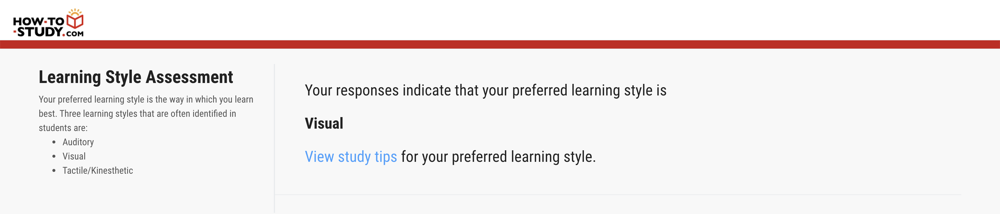
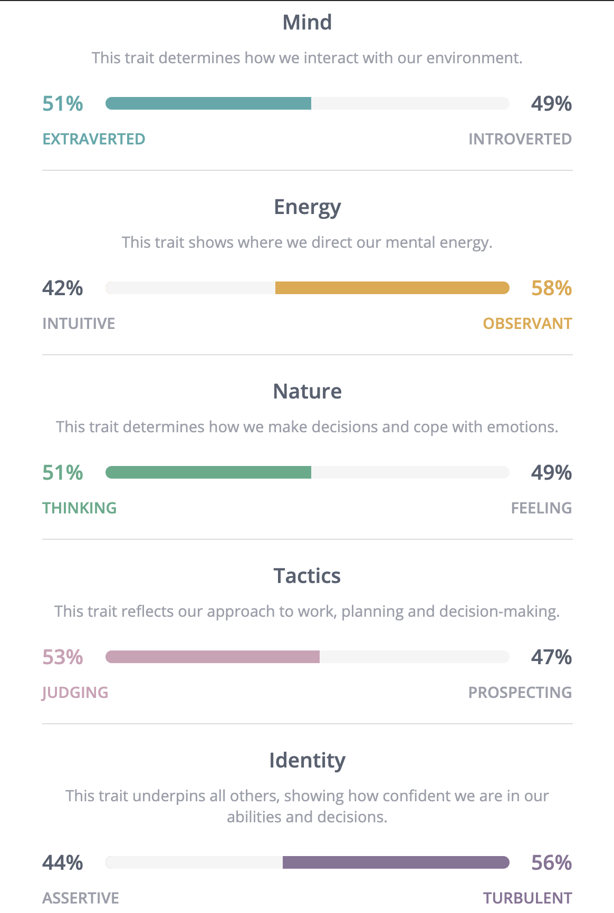
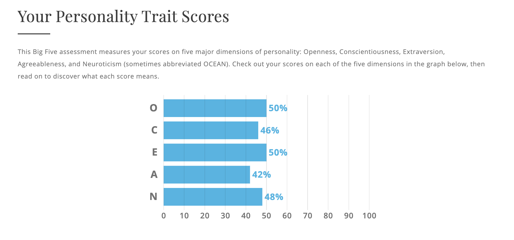

A little about me
I was born in Melbourne on 11th February 2000. My parents are both from Sri Lanka and moved here before I was born, since they spoke Tamil when they lived there, I was also taught to speak Tamil and learn English at school. We mostly follow the same culture from Sri Lanka, I am a Hindu, so I mostly go to the temple once a week but due to the current situation that's been temporarily stopped. I studied up till year 12 VCE standards and got my ATAR to apply for my course in bachelor’s in computer science in RMIT but then changed after 2 years to Bachelor of Information of Technology. In the past I have learnt keyboard, clarinet, Indian Drums, Violin also tried various sports from basketball, tennis, badminton and swimming.
My Background
My interests in Information Technology
Since I moved to year 7, I was interested in IT and always was inquisitive on how things worked and what made them run flawlessly. I started building small applications and apps through high school, also as my VCE subject mid-year project I built a grocery app catalogue for my dad's store. Which would show all the products by brand and filter the specials on a different tab. That was when I initially knew that I wanted to go into IT but didn't know what field specially. So, I tried Bachelor of Computer Science and it was too hard-core coding and the focus was on raw coding, which wasn't really what was interesting for me. In-between that course I started an ecommerce website which delivers Indian groceries to customers who can't reach our store in the current situation, so I decided to change my course to Bachelor of Information Technology where I also took an minor in business IT where the course would help me understand and build my ecommerce store.
We normally have classes at school where they would talk about what careers we would do and where we would choose to do them. Since RMIT was rated a high number in the Information Technology department I chose to go there. Also, when I was in year 9, we went to RMIT as an orientation to see the campus and how a university would look and feel like. Once I was there, I was very interested in joining and starting my course as soon as I finished VCE. I stated to look at courses what type of prerequisites I needed and watched a few videos on RMIT and came to the open day, since I was interested in how the campus was, I applied, and I got into RMIT.
After changing form my initial course to Bachelor of Information Technology minoring in Business in IT, I hope to learn skills to develop my business into a larger scale. Since I'm starting this only having background in IT, I'm not sure in the aspects of building a business in a proper scale and method. Over the course, just from looking at the course overview I can see that the material taught is applicable in my case, so in finishing the course it should help me build it bigger.
Ideal Job
Currently I founded and currently running an ecommerce business where I would sell Indian Groceries to people who can't reach our store. As I am interested in information technology and in joining that with business to found and run something, in my opinion is better than working for someone else. As a long-term idea, I would like to make this something that is big enough to be a living. This would mean I would expand from groceries to other products and interest the Asian community, I am also interested in expanding this bigger so that I am able to cover more customers in Australia. A current problem that I have is that many customers that I can't send products to, live in other states and are too far for me to cover. I want to be able to send any product to anyone in Australia that would order from my website. Obviously, the necessary skills that I would need to run a business is either a business degree or self-learn business skills, obviously since I am enrolled in Bachelor of Information Technology, I would have to learn the business aspect on the way. The experience I have would be technology wise would have to be me building small applications when I was younger. From time to time learning and being curious of what possibilities I have to create something expand it, however the business side it would have to be from my father built and owns a grocery store, which is what I'm making online, and he taught me a few things that I would need to run a successful business but experience is not the only thing I need, it would have to be the ability to keep learning.
Personal Profile
  These tests are a good indication of what kind of team member I am and the strengths and weakness that I would be to a team situation. The tests are explicit in saying that my leaning style is visual, an open character and that I have decent amount of mental energy. These are the traits that if not put with similar or close people like me would cause a group to fall down. However, having member who are strong in my weaknesses would be helpful in bringing the group to a good standard and having it push me and other team members to achieve greater things in the assignment.
Project
My project would be to create an app that would not only allow customers to buy groceries but to be able to sell their own goods to other interested people. This app would allow for me to sell Indian groceries from spices, lentils, rice and etc, which would also include some other products that would be related to the Asian community. Since there are already apps like this in the market, I want to create an extra functionality which would allow users to list or sell their own items on the app. Let it be paintings, homemade food or even services to others.
My motivation for this project would have to be that I would create something that is not currently in the market. To be specific the “Asian Market” of Indian stores, there are many stores currently which have been around for many years since the time my parents moved here to Australia however couldn’t even think to create an online service for customers who couldn’t reach them, new information from the ABS reveal the Indian population in Australia has grown to 660,000 in 2020. This is an 11 per cent increase compared to 592,000 Indians living in Australia in 2018. Something as straight forward as an online site we were on of the first to release it so an app that would also allow customer to customer selling was something that not many people would even think to do.
The app would as a basic functionality allow me to sell normal Indian groceries that customers can’t find elsewhere. From basic spices to specific rice, which is not only hard to find but nothing will be deliver to you home. The app would fix this issue since people would order and choose delivery that would allow their groceries to come to their home. The app would allow customers to scroll through different brands of products, different sizes and different prices, also help them to order the same order from week to week with just one click. Not only would there be normal grocery products but also cookers and grinders which people don’t sell online. It would also have a review system where people can review the products which help customers make a choice on what to buy.
The Marketplace selling section of the app would allow customer to list their old cookers or grinders which will be in working condition and sell it to other customers. At first, I would have to verify before anyone would post any products to see if they are in working condition and are in the guidelines of what can be sold in Australia. The app would allow customers to hide their details until a person who they want to sell to will be able to see it. It would also include service listings e.g. marriage make up etc. Since the type of services that we might need won’t be available on normal platforms it would be better to build one to help to bring it into one place.
Business to business selling would be one aspect that I would include for other business to buy in bulk. It won’t be wholesale, but they can buy large amounts of groceries for a cheaper rate. This would be where they would enter their business information including ABN, which I would have to check if it’s a valid ABN or not then show a different page from the normal user. This would be different prices and have minimum quantities for all the products since it is to be bought in bulk only.
Mostly the technology for this would be XCode and Android Studio since these are the most popular IDE to build an application on. Other than that, mostly a laptop would be fine for me to manage everything. A phone is also a must, which already everyone has, since communication to customers and testing functionalities to the app would be on there. Also, it’s useful to have the backend be accessible anywhere anytime with my phone. Other smaller application that would be useful to me is Office 365 since I do have to keep accounts and logs of everything that happens in the business. Obviously, the use of a cloud team development site like GitHub would be compulsory if I expanded to a team to build the app.
The skills required to achieve this would be programming languages like C Sharp for Android programming and Swift for IOS programming. Also, would have to consider how a customer would sell products on the site this would mean that I would have to know how to secure the site, since the information of people’s data would be stored on the server. How a customer would only allow people buying the product to know their address, phone number and etc. With the shopping side of things, I would have to secure it as the card details of customers would be entered to make a purchase. It would also be useful to know how to find different API’s and how to integrate it into my app to help make the experience easier for the customer. This would be the technical aspect of it if I go to the business side of things, I would need to map out how a customer would sell a product what the commission would be for us to give our platform. When selling the products how to charge for delivery so it doesn’t seem too expensive and to limit and charge differently for all areas of Melbourne. These would be skills that can be self-taught or even be found in course at RMIT.
The outcome of this is very simple, to create an easier way to shop. Already shops like Coles and Woolworths are doing it but none of them offer any Indian spices or products. This would mean that we would help customers be able to order things that they can’t find with anyone else, also with a cheaper price. The app would also help any old things or new ideas to be sold on the app, give the opportunity through our app.